이 글의 예상 독자
아래와 같은 에러의 원인을 찾아헤멘 개발자
- o.h.engine.jdbc.spi.SqlExceptionHelper : SQL Error: 0, SQLState: null
- o.h.engine.jdbc.spi.SqlExceptionHelper : hikari-pool-1 - Connection is not available, request timed out after 30000ms.
- unable to obtain isolated JDBC connection; nested exception is org.hibernate.exception.JDBCConnectionException: unable to obtain isolated JDBC connection
- Could not open JPA EntityManager for transaction; nested exception is org.hibernate.exception.JDBCConnectionException: Unable to acquire JDBC Connection
또는 HikariCP maximum pool size 설정할 때, 고려할게 있나? 그냥 대충 많이 만들어 두면 되는거 아니었어? 라고 하시는 개발자
장애를 맞았습니다.
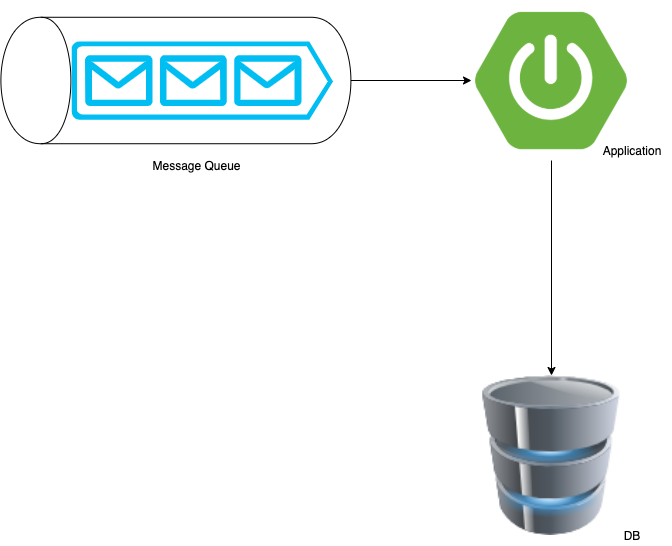
사내에서 사용하는 시스템의 간략한 모식도 입니다.
Message Queue를 통해 Data를 application에서 consume하여 consume 한 데이터를 DB에 insert하고 있습니다.
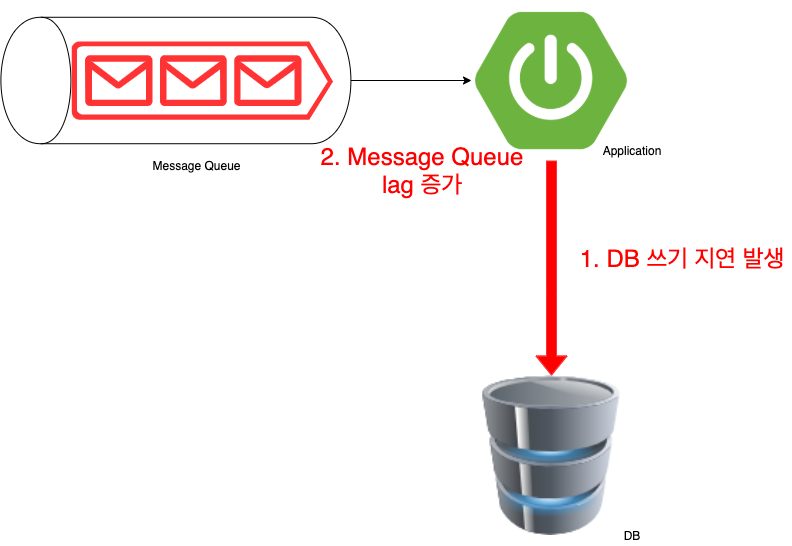
시스템 운영중 Message Queue에 많은 데이터가 한번에 유입되었습니다. 그로 인해
- DB에 insert하는 과정에서 쓰기지연이 발생 하였습니다.
- 쓰기 지연이 발생하여, Message Queue의 lag이 증가하여 많은 량의 Data를 처리하지 못하고 밀리는 상황이 되었습니다.
원인은 분석하니, Message Queue Consumer Thread 갯수와 HikariCP maximum pool size간의 상관관계가 있음을 발견하였고,
그 과정에서 HikariCP의 Pool Size로 인한 Thread dead lock이 발생하여 Insert Query가 실패하고 있음을 알게 되었습니다.
이번 장애를 통해 알게 된 Dead lock을 피할 수 있는 HikariCP maximum pool size 갯수를 설정하는 방법에 대해 공유하고자 합니다.
HikariCP에서는 Connection을 어떻게 관리하나?
Springboot 2.x가 출범하면서 HikariCP를 default JDBC Connection Pool로 사용하고 있고, 성능이 좋고 빠르기로 이미 검증된 Connection Pool입니다.
이번 문제를 해결하면서 하나의 스레드가 Hikari Pool에서 커넥션을 얻고 (getConnection), 커넥션을 반납 (close) 하는 과정을 살펴보았습니다.
아래 내용을 보시기 전에…
- HikariPool에서는 Connection 객체를 한번 wrapping한 PoolEntry라는 Type으로 내부적으로 Connection을 관리합니다.
아래 글에서는 이해를 편하게 하도록 Connection이라는 용어로 언급하도록 하겠습니다. - 1인칭 Thread 시점을 통해 생각해 보았습니다.
하나의 Query가 실행되는 과정
내부적인 코드는 더 잘 구성이 되어있지만, 간략한 코드로 표현하자면 아래와 같을 것 입니다.
1 | Connection connection = null; |
- hikariDataSource.getConnection()을 통해 hikariPool에서 Connection을 하나 얻습니다.
- execute()를 통해 쿼리를 실행하고 connection.close()을 통해 hikari pool에 connection을 반납합니다.
getConnection(), close()를 조금 더 내려가서 HikariPool에서의 처리를 자세하게 살펴보겠습니다.
Hikari님! Connection 하나만 주세여
Hikari Pool에서 getConnection 로직은 3단계를 통해 Connection 객체를 얻을 수 있게 되어있습니다.
(HikariCP에서 얼마나 성능을 올리기 위해 노력했는지 코드로 보입니다.)
Hikari CP에서는 ConcurrentBag이라는 구조체를 이용해 Connection을 관리하고 있습니다.
HikariPool.getConnection() -> concurrentBag.borrow() 라는 메서드를 통해 사용가능한 Connection을 리턴하도록 되어있습니다.
1인칭 Thread 시점으로 Hikari Pool에게 Connection을 하나 요청해 보았습니다.
(개발은 유치하게 이해할수록 이해도 잘되고 기억에 잘 남는것 같아서.. 각본을 준비해봤습니다.)
[Thread-1님] 안녕하세요 Hikari님! Connection 하나만 주세요~
[Hikari님] 안녕하세요 Thread-1님! 저희 pool에서는 Connection을 주는 규칙이 있답니다. 확인해볼게요~
[Hikari님] 이전에 Thread-1님이 저희 pool에 방문한 내역 먼저 살펴볼게요!
[Hikari님] 오! 이전에 방문한 내역이 있으시네요~ 근데 그때 사용한 Connection은 다른 Thread 님이 사용 중(IN_USE) 이시네요~
다른 Thread님이 안 쓰셨으면 빠르게 이 Connection 먼저 드렸을 텐데 아쉽네요ㅠㅠ
[Thread-1님] 괜찮아요! Hikari님 다른 Connection 주세요~
[Hikari님] Pool 전체에서 사용 가능한(idle) Connection이 있는지 찾아볼께요~
[Hikari님] (Loop 돌면서 찾는중…)
[Hikari님] Thread-1님 지금 전체 Connection이 다 사용중이에요! ㅠㅠ
저기 handoffQueue 앞에 가서 좀 기다리셔야 할 것 같아요 ㅜㅜ
[Thread-1님] 네 괜찮아요! (안 괜찮음) 저기서 30초만 기다려보고 없으면 Exception내면 되죠^^
(깨알 Tip. HikariCP default Connection timeout은 30초 입니다.)
[Hikari님] 네 죄송합니다 Thread-1님. 다음에 또 다시 방문해주세요~
[Thread-1님] (handoffQueue에서 다른 Thread가 쓰고 반납한 Connection을 얻었다!)
혹시 잘 이해가 가셨을까요..?
이해가 아직 안되신 분들을 위한 Flow chart를 준비해보았습니다.
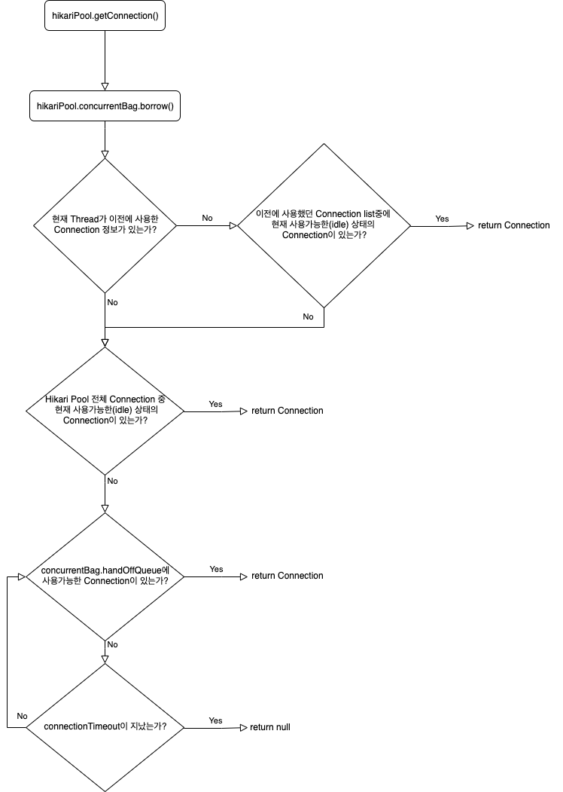
코드 레벨로 확인해보시려면 -> ConcurrentBag.borrow()
Hikari님! Connection 다 썼어요
HikariCP에서 얻은 Connection은 (ProxyConnection) Connection.close()를 하게 되면 HikariPool에 반납이 됩니다.
(HikariPool에서 얻은 Connection은 ProxyConnection 타입입니다.)
정상적인 transaction이 마무리 되거나, Rollback이 호출 되어도 connection.close()가 호출되어 Connection을 반납합니다.
getConnection과 마찬가지로 connection.close() 시, concurrentBag.requite()이 실행되며 Connection이 반납됩니다.
위와 같이 1인칭 Thread 시점으로 각본을 짜보겠습니다.
[Thread-1님] Transaction내의 쿼리를 모두 수행하고 Commit이 되었어 이제 Connection을 반납해볼까?
[Thread-1님] Thread-1님이 (ProxyConnection) connection.close()을 실행하였습니다.
[Hikari님] 안녕하세요 Thread-1님! Connection 이용은 만족스러우셨나요? Connection 반납 절차 도와드리겠습니다.
[Hikari님] 일단 PoolEntry의 상태를 STATE_NOT_IN_USE로 바꿀게요. (여기서 idle connection이 됩니다.)
[Hikari님] handOffQueue에서 Connection을 받길 원하는 다른 Thread님이 있나봐요~
[Hikari님] (handOffQueue에 Connection 삽입)
[Hikari님] Thread-1님 고생하셨습니다~ 이번에 사용한 Connection 정보 등록해 드릴께요! 다음에 빠르게 이용하실 수 있으실거에요*
***[Thread-1님]** 감사합니다! Hikari님 또 Connection 받으러 올께요
혹시 잘 이해가 가셨을까요..?
이해가 아직 안되신 분들을 위한 Flow chart를 준비해보았습니다.
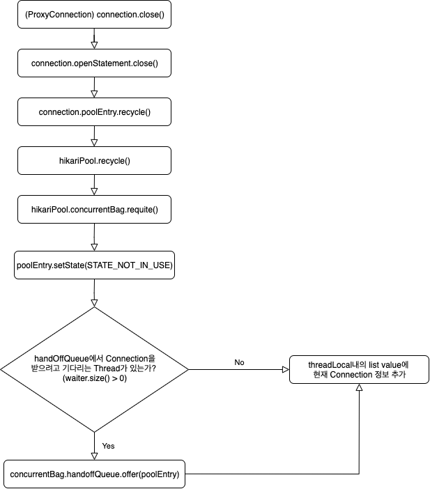
코드 레벨로 확인해보시려면 -> ConcurrentBag.requite()
HikariCP에서 Dead lock이 발생하는 Case
consumer thread 갯수에 따른 충분한 HikariCP의 maximum pool size를 설정하지 못해 Dead lock이 발생하여 이번 장애로 이어지게 되었습니다.
도데체 무슨 관계가 있다고 Dead lock이 발생했을까요?
간단한 예시를 통해 알아보도록 하겠습니다.
Thread count와 maximum pool size의 조건은 아래와 같습니다.
- Thread Count: 1개
- HikariCP MaximumPoolSize: 1개
- 하나의 트랜잭션에서 요구되는 Connection 갯수: 2개!!
조금은 감이 오시나요?
그림으로 살펴보도록 하겠습니다.
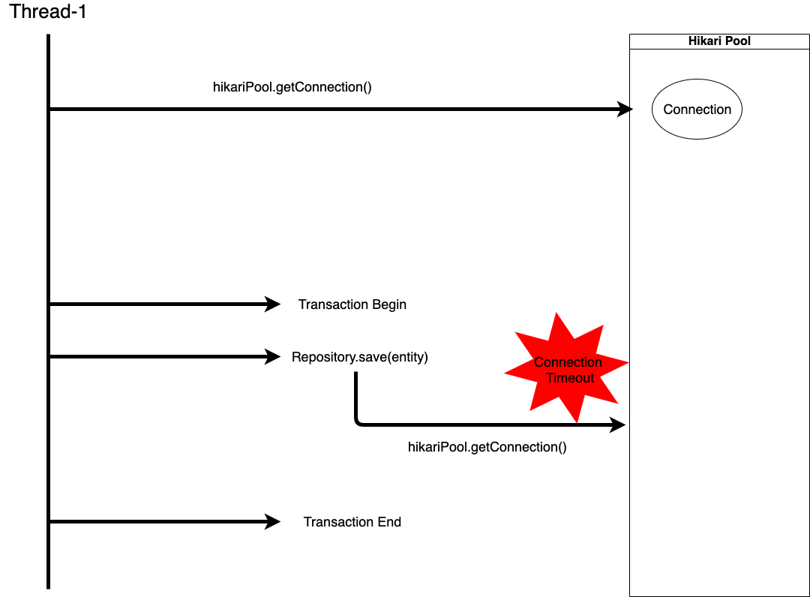
- 하나의 Thread가 Repository.save(entity) 라는 insert query를 실행하기 위해 Transaction을 구성합니다.
- Transaction용 Connection을 하나 가져옵니다. (PoolStats : total=1, active=1, idle=0, waiting=0)
- Transaction을 시작하였고 Repository.save를 하기 위해 Connection이 하나 더 필요하다고 가정해보겠습니다.
- Thread-1은 Hikari Pool에 Connection을 요청합니다.
- 위의 3단계 절차대로, 현재 자기 Thread의 방문내역을 살펴봅니다.
아직 방문내역이 등록된 게 없습니다. - 전체 Hikari Pool에서 idle상태의 Connection을 스캔합니다.
Pool Size는 1개이고 1개 있던 Connection은 Thread-1에서 이미 사용중입니다. - 마지막으로 handOffQueue에서 누군가 반납한 Connection이 있길 기대하며 30초 동안 기다립니다.
하나 있던 Connection을 자기 자신이 사용하고 있기 때문에 자기 자신이 반납하지 않는 이상 사용할 Connection이 없습니다.
(PoolStats : total=1, active=1, idle=0, waiting=1) - 결국 30초가 지나고 Connection Timeout이 발생하고
hikari-pool-1 - Connection is not available, request timed out after 30000ms.와 같은 에러가 발생
- 위의 3단계 절차대로, 현재 자기 Thread의 방문내역을 살펴봅니다.
- Transaction에 대한 evictMark가 찍히고 트랜잭션이 롤백 됩니다.
- 롤백 됨과 동시에 Transaction용 Connection은 다시 Pool에 반납됩니다. (PoolStats : total=1, active=0, idle=0, waiting=0)
이렇게 Thread내에서 하나의 Task에 수행하는데 필요한 Connection갯수가 모자라게 되면
Dead Lock 상태에 빠져 Insert Query를 실행할 수 없게 됩니다.
위에는 예시이고, 실제 상황은 뭐였어요?
제가 장애를 맞았던 실제 환경에 대해 설명해드리겠습니다.
장애 환경에 대한 Thread count와 maximum pool size의 조건은 아래와 같습니다.
CPU Core : 4개
Thread Count: 16개
HikariCP MaximumPoolSize: 10개
하나의 트랜잭션에서 요구되는 Connection 갯수: 2개
(처음엔 1개일거라 생각했지만, getConnection에 대한 디버깅을 해보니 2번의 getConnection 요청이 발생했습니다.)
실제 구현부의 간단한 코드입니다.
1 |
|
1 |
|
혹시 이 코드에서 왜 Connection이 2개나 필요한지 짐작이 되시나요?
코드만 보면 하나의 Connection으로 Insert가 잘 될 것 같습니다.
여태까지 그런줄 알았고 이번 장애가 아니었다면 몰랐을 것이었습니다.
@GeneratedValue(strategy = GenerationType.AUTO)
이 사건의 범인은 이 코드로 부터 시작됩니다.
GeneratedValue(strategy = GenerationType.AUTO)인 경우에는 JPA 구현체가 자동으로 ID값 생성전략을 결정합니다.
사내에서 사용하는 RDB는 MySQL을 사용하고 있습니다.
ID의 Type이 long 타입이고, hibernate.id_new_generator_mappings 값이true (default true)이기 때문에
ID 필드에 대한 Generator는 내부적으로 SequenceStyleGenerator를 사용하게 됩니다.
하지만 MySQL에서는 Oracle처럼 Sequence라는게 존재하지 않기 때문에 hibernate_sequence라는 테이블을 생성하고, 테이블에 단일 로우로 된 id값을 계속 update하며 sequence처럼 관리합니다.
getConnection에 대한 call tree를 역주행하면서 hibernate 내부 코드까지 보게 되었습니다.
call tree에 대한 대략적인 단계는 아래와 같습니다.
- repository.save(entity): 내부적으로 SimpleJpaRepository.save가 호출됩니다.
- DefaultPersistEventListener에 의해 saveWithGeneratedId가 호출됩니다.
- saveWithGeneratedId가 실행되며, Entity의 Id값을 생성할 때 SequenceStyleGenerator를 이용하여 생성합니다.
- SequenceStyleGenerator.generate 코드에서 databaseStructure.buildCallback()이 실행되며, TableStructure.buildCallBack()이 실행됩니다
(이 코드에서 hibernate_sequence에 대한 조회, update가 이루어집니다.) - hibernate_sequence를 조회, update를 하는데에 있어서 별도의 Transaction으로 동작하게 됩니다.
select next_val as id_val from hibernate_sequence for update쿼리를 실행하게 되고, 트랜잭션이 끝나기 전까지 Table Lock이 걸리게 됩니다.
(만약 같은 Transaction 내에서 동작했다면은 hibernate_sequence table에 대한 Table Lock이 동작해 다른 스레드에서 id값을 생성하지 못할 것입니다.) - 별도의 트랜잭션으로 동작하게 되면서 새로운 Connection을 하나 받아오게 됩니다 (여기서 2번째 connection을 받아옵니다.)
위의 call tree에 대한 코드 입니다.
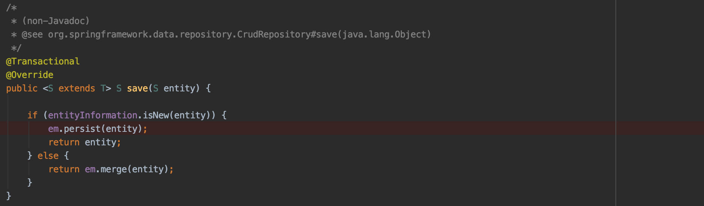
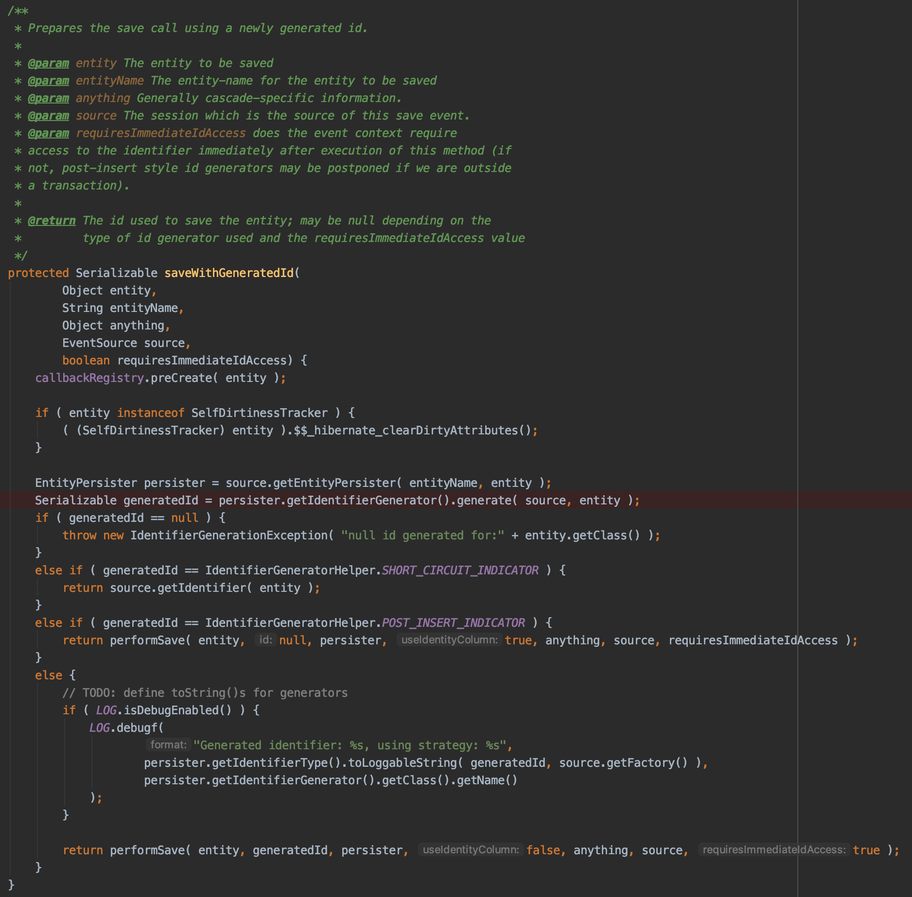
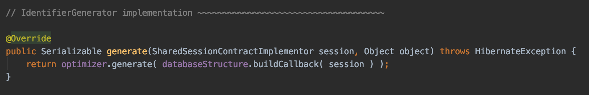
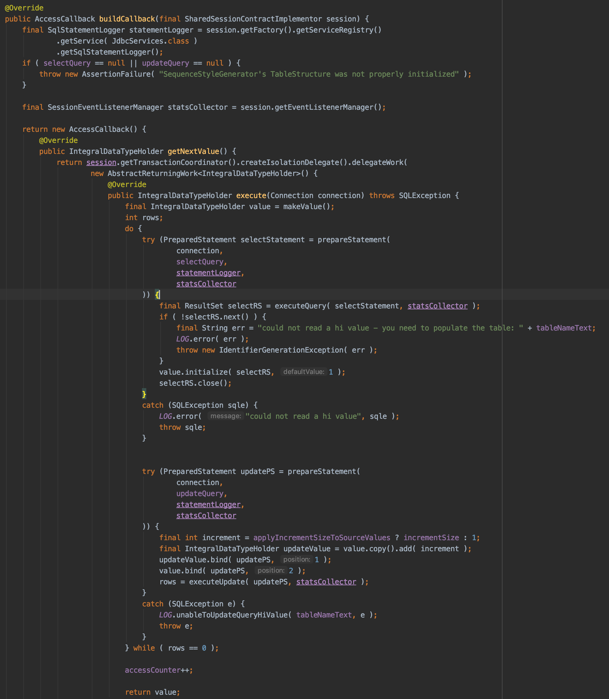
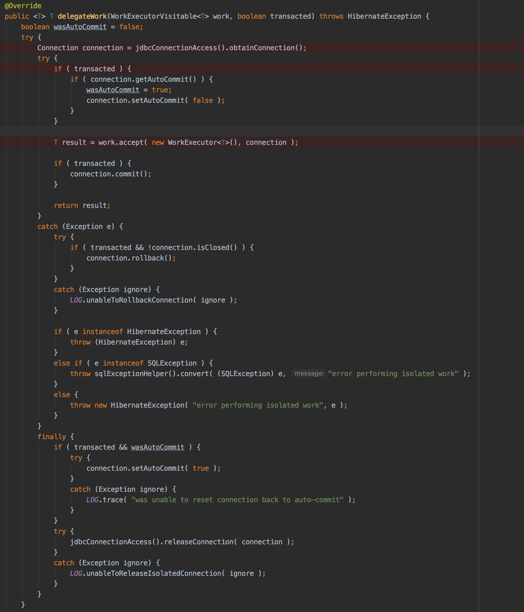
하나의 Task에서 필요한 Connection은 2개인데 왜 Dead Lock이 걸리죠?
부하가 크게 걸리지 않는 일반적인 상황에서는 문제가 없을 것입니다. 스레드 전체가 일을 하지 않을 것이기 때문입니다.
문제는 전체 스레드가 동시에 일을 하게 되는 부하 상황 시에 발생합니다.
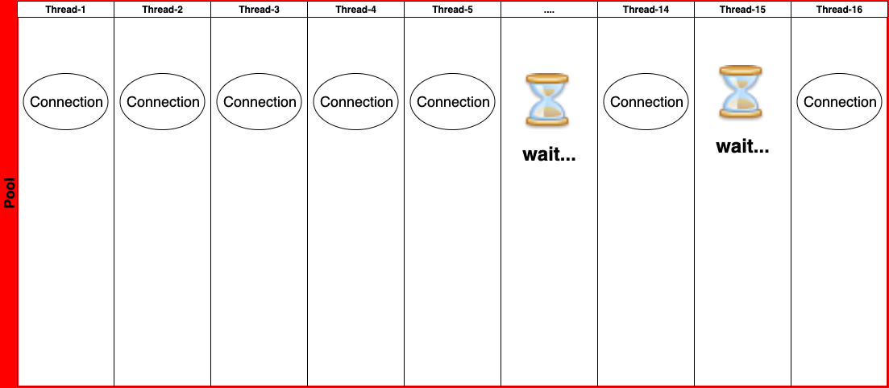
이런 식으로 16개의 스레드 중 10개의 스레드가 10개의 Connection을 모두 잡고 있으면 10개의 스레드 중 하나의 스레드에서
2번째 Connection에 대한 timeout이 발생하지 않으면 계속 30초씩 지연이 발생하게 됩니다.
하물며 idle Connection이 다시 발생한들 남은 6개의 Thread들 중 하나가 Connection을 가져가면 dead lock의 악순환의 고리에 빠지게 됩니다.
간혹 운이 좋게 하나의 스레드가 Connection 2개를 획득하여 트랜잭션이 성공하는 case도 있을 것 입니다.
(이런 경우 간헐적으로 동작하기 때문에 원인 파악이 매우 힘들어 집니다.)
Dead lock을 피하는 Maximum pool size는 어떻게 설정하나요?
HikariCP의 Dead lock에 대한 case는 이미 HikariCP issue에 등록되어있다.
HikariCP에서는 Dead Lock을 피하기 위한 최적의 Maximum Pool Size를 방법을 제시하고 있다.
공식은 아래와 같다.
pool size = Tn x (Cm - 1) + 1
- Tn : Thread의 최대 수
- Cm: 하나의 Task에서 필요한 Connection 갯수
실제로 맞는 공식인지 알아보자
- Thread Count : 8개
- 하나의 Task에 필요한 Connection 갯수: 2개
- pool Size = 8 x ( 2 - 1) + 1 = 9개
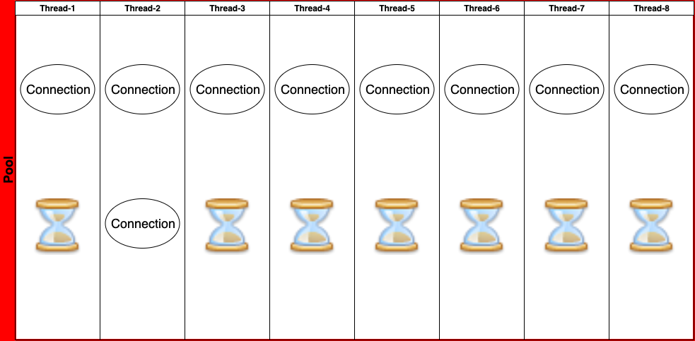
- thread 8개가 골고루 Connection을 하나씩 얻었고 7개의 스레드가 2번째 스레드를 기다리고 있다.
- 이렇게 되면 스레드 2번의 2번째 Connection은 빠르게 hibernate_sequence만 조회, update하고 빠르게 반납되게 된다.
- 이로 인해 다른 스레드에서도 Connection을 받을 수 있게 된다
- thread 2번에서도 정상적으로 트랜잭션이 처리되게 된다. -> connection이 반납된다.
- 위와 같은 pool size로 dead lock을 피할 수 있는 최소한의 pool size를 얻을 수 있게 되었다.
이 글을 쓰고나니 생기는 질문
Embedded Tomcat의 default thread count는 200개인데 공식을 적용하면 hikari pool size가 수백개가 될 수도 있다.
- 기본적으로 task당 1개의 connection만 필요하면 poolSize 1개로도 모든 요청은 다 처리할 수 있다.
- 2개 이상의 connection이 필요한 경우에는 tomcat thread count를 줄이고 hikari pool size도 100개 이하로 조정한다.
- 퍼포먼스가 안나오는 경우에는 DB에 insert하는 application의 아키텍쳐를 수정하는 방법도 있을 것 같다.
퍼포먼스 저하는 없었나?
- 기존 16개인 thread를 4개 정도로 조절했다.
- 1 thread 당 300 TPS정도의 성능이 나와 4 core인 환경에서는 문제 없이 처리할 수 있다.
- 오히려 thread 수를 줄여 message queue의 throttling을 할 수 있게 되었다.
- core 수에 맞게 제한된 리소스를 사용하는 것이 오히려 context-switching에 대한 overhead를 줄여 성능상의 이점이 있다고 한다.
([About Pool Sizing] - <https://github.com/brettwooldridge/HikariCP/wiki/About-Pool-Sizing)
Limited Resources
It is not quite as simple as stated above, but it’s close. There are a few other factors at play. When we look at what the major bottlenecks for a database are, they can be summarized as three basic categories: CPU, Disk, Network. We could add Memory in there, but compared to Disk and Network there are several orders of magnitude difference in bandwidth.
If we ignored Disk and Network it would be simple. On a server with 8 computing cores, setting the number of connections to 8 would provide optimal performance, and anything beyond this would start slowing down due to the overhead of context switching. But we cannot ignore Disk and Network. Databases typically store data on a Disk, which traditionally is comprised of spinning plates of metal with read/write heads mounted on a stepper-motor driven arm. The read/write heads can only be in one place at a time (reading/writing data for a single query) and must “seek” to a new location to read/write data for a different query. So there is a seek-time cost, and also a rotational cost whereby the disk has to wait for the data to “come around again” on the platter to be read/written. Caching of course helps here, but the principle still applies.
참고
- [About Pool Sizing] - https://github.com/brettwooldridge/HikariCP/wiki/About-Pool-Sizing
- [Down the Rabbit Hole] - https://github.com/brettwooldridge/HikariCP/wiki/Down-the-Rabbit-Hole
- https://github.com/brettwooldridge/HikariCP